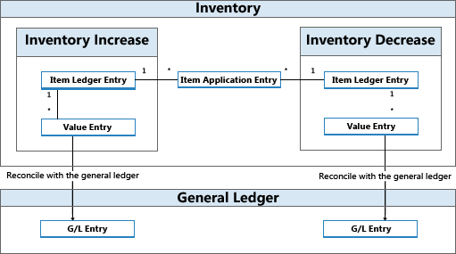

Design Details: Inventory Posting
Each inventory transaction, such as a purchase receipt or a sales shipment, posts two entries of different types.
| Entry type | Description |
|---|---|
| Quantity | Reflects the change of quantity in inventory. This information is stored in item ledger entries. Accompanied by item application entries. |
| Value | Reflects the change of inventory value. This information is stored in value entries. One or more value entries can exist for each item ledger entry or capacity ledger entry. For information about capacity value entries related to the use of production or assembly resources, see Design Details: Production Order Posting. |
In relation to quantity postings, item application entries exist to link inventory increase with inventory decrease. This enables the costing engine to forward costs from increases to the related decreases and vice versa. For more information, see Design Details: Item Application.
Item ledger entries, value entries, and item application entries are created as a result of posting an item journal line, either indirectly by posting an order line or directly in the Item Journal page.
At regular intervals, value entries that are created in the inventory ledger are posted to the general ledger to reconcile the two ledgers for financial control reasons. For more information, see Design Details: Reconciliation with the General Ledger.

Example
The following example shows how item ledger entries, value entries, and item application entries result in general ledger entries.
You post a purchase order as received and invoiced for 10 items with a direct unit cost of LCY 7 and an overhead rate of LCY 1. The posting date is 01-01-20. The following entries are created.
Item Ledger Entries
| Posting Date | Entry Type | Cost Amount (Actual) | Quantity | Entry No. |
|---|---|---|---|---|
| 01-01-20 | Purchase | 80.00 | 10 | 1 |
Value Entries
| Posting Date | Entry Type | Cost Amount (Actual) | Item Ledger Entry No. | Entry No. |
|---|---|---|---|---|
| 01-01-20 | Direct Cost | 70.00 | 1 | 1 |
| 01-01-20 | Indirect Cost | 10.00 | 1 | 2 |
Item Application Entries
| Entry No. | Item Ledger Entry No. | Inbound Item Entry No. | Outbound Item Entry No. | Quantity |
|---|---|---|---|---|
| 1 | 1 | 1 | 0 | 10 |
Next, you post a sale of 10 units of the item with a posting date of 01-15-20.
Item Ledger Entries
| Posting Date | Entry Type | Cost Amount (Actual) | Quantity | Entry No. | |
|---|---|---|---|---|---|
| 01-15-20 | Sale | -80.00 | -10 | 2 |
Value Entries
| Posting Date | Entry Type | Cost Amount (Actual) | Item Ledger Entry No. | Entry No. |
|---|---|---|---|---|
| 01-15-20 | Direct Cost | -80.00 | 2 | 3 |
Item Application Entries
| Entry No. | Item Ledger Entry No. | Inbound Item Entry No. | Outbound Item Entry No. | Quantity |
|---|---|---|---|---|
| 2 | 2 | 1 | 2 | -10 |
At the end of the accounting period, you run the Post Inventory Cost to G/L batch job to reconcile these inventory transactions with the general ledger.
For more information, see Design Details: Accounts in the General Ledger.
The following tables show the result of reconciling the inventory transactions in this example with the general ledger.
Value Entries
| Posting Date | Entry Type | Cost Amount (Actual) | Cost Posted to G/L | Item Ledger Entry No. | Entry No. |
|---|---|---|---|---|---|
| 01-01-20 | Direct Cost | 70.00 | 70.00 | 1 | 1 |
| 01-01-20 | Indirect Cost | 10.00 | 10.00 | 1 | 2 |
| 01-15-20 | Direct Cost | -80.00 | -80.00 | 2 | 3 |
General Ledger Entries
| Posting Date | G/L Account | Account No. (En-US Demo) | Amount | Entry No. | |
|---|---|---|---|---|---|
| 01-01-20 | [Inventory Account] | 2130 | 70.00 | 1 | |
| 01-01-20 | [Direct Cost Applied Account] | 7291 | -70.00 | 2 | |
| 01-01-20 | [Inventory Account] | 2130 | 10.00 | 3 | |
| 01-01-07 | [Overhead Applied Account] | 7292 | -10.00 | 4 | |
| 01-15-20 | [Inventory Account] | 2130 | -80.00 | 5 | |
| 01-15-20 | [COGS Account] | 7290 | 80.00 | 6 |
Note
The posting date of the general ledger entries is the same as for the related value entries.
The Cost Posted to G/L field in the Value Entry table is filled.
The relation between value entries and general ledger entries is stored in the G/L - Item Ledger Relation table.
Relation Entries in the G/L – Item Ledger Relation table
| G/L Entry No. | Value Entry No. | G/L Register No. |
|---|---|---|
| 1 | 1 | 1 |
| 2 | 1 | 1 |
| 3 | 2 | 1 |
| 4 | 2 | 1 |
| 5 | 3 | 1 |
| 6 | 3 | 1 |
Assembly and Production Posting
Capacity and resource ledger entries represent the time that is posted as consumed in production or assembly. These process costs are posted as value entries to the general ledger along with the involved material costs in a similar structure as described for item ledger entries in this topic.
For more information, see Design Details: Assembly Order Posting.
See Also
Design Details: Inventory Costing
Design Details: Accounts in the General Ledger
Design Details: Cost Components
Managing Inventory Costs
Finance
Working with Business Central